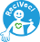

<ons-page>
    
    <ons-toolbar fixed-style class="maintoolbar">
        <div class="center maintoolbartext">ReciVeci</div>
        <div class="right maintoolbaricon">
            
        </div>
    </ons-toolbar>

    <ons-tabbar var="tabbar" position="bottom">
        <ons-tabbar-item
            icon="thumbs-o-up"
            label="Separa"
            page="recycling.html"
            active="true"></ons-tabbar-item>
        <ons-tabbar-item
            icon="ion-map"
            label="Recolección"
            page="map.html"></ons-tabbar-item>
       
        

        <ons-tabbar-item
            icon="rss"
            label="Noticias"
            page="news.html">

        </ons-tabbar-item>
        <!-- <div class="notification reply-notification">3</div> -->
        

<!--         <ons-tab page="news.html">
            <div class="notification reply-notification" ons-tab-inactive>4</div>
            <ons-icon icon="rss" class="tab-icon"></ons-icon>

        </ons-tab> -->

        
<!--         <ons-tabbar-item
            icon="ion-stats-bars"
            label="Datos"
            page="rates.html"></ons-tabbar-item>
 -->        <ons-tabbar-item
            icon="ion-chatbubbles"
            label="Contactos"
            page="contacts.html"></ons-tabbar-item>
    </ons-tabbar>
</ons-page>